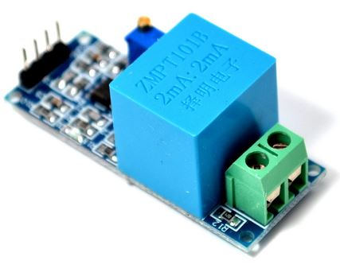

Hardware development documentation¶
- Auteur
J.Soranzo
- Date
Octobre 2018
- version
git versionning
Table of Contents
Ce qui existe en 2020 !¶
TPlink
MEROSS
WECONN
AISIRER
HORSKY
KONYKS sur AMAZON moins de 20€ et même une prise multiple Polyco 1 moins de 60€ chez Boulanger, AMAZON, Darty…
Test de la prise TP-Link avec mesure de courant¶
Tout d’abord il faut installer l’appli sur son smart phone ! Quid du pilotage depuis le pc ou le mac ou depuis son linux ? Ensuite il faut créer un compte avec fourniture d’adress mail sur tplink pour piloter une pauvre prise ! Argl !
Progres¶
alimentation ESP/Wemos en 5V ? : OK
horloge temps réelle : OK
bouton poussoirs : OK
Affectation des io : OK
module relais : OK
définition des modes de fonctionnement : OK
récup paramètre via form submit html : OK
add WS2801 LED : OK
Alimentation du module relais en 5V (choix du conver.) : 60%
add power led OK
add power button : OK
add wifi led : OK
add LDR : removed
add I2C nano expander with analog inputs OK
change BP to nano I2C and relay command to ESP directly (to allow turnoff relays in fatal error) OK
resolv power up problem : implement MAX1232 [ as an option onto the PCB ] discarded
implement an I2C watch dog component [ as an option onto the PCB ] OK
choix curent sensor: 75% - discarded in the first version
pcb study OK
packaging study
integartion
add a MOSFET on general power relay to switch them all in one time on power off
Watchdog function¶
During multiple tests, i noticed that watch dog functionnality of the ESP8266 may fail to reset the component. But perhaps only when connected to usb port. So i must made more tests.
What are others solutions for watchdog
RTC DS3231 has a INT output but we can only set to 1 / second or 1/minutes. And it is a pour solution to control this component to use itself !
MAX1232 has a watch dog feature but with a maximum of 1.2s and direct at startup activated. It can’t be activate after setup for example. And if we use it, we need to drive its ST pin but all our outputs are used !
Use a I2C watchdog component as DS1371. If using this component we need to implement a 32kHz oscillator ! DS1374U-3+ 2 (power sup 3V) or -33+ in 3.3V available on MOUSER site for 3€23 Don’t forget to buy oscillator : 32k quatz chez Mouser 3 0.68€ !
Warning U denote a uSOP package with à 0.5mm pitch!
Perhaps DS1374 could replace MAX1232 but its VPF level is very low about 2.3V regardless of the 4.6V of the MAX1232.
Arduino library for DS1374 here 4
Use the our NANOI2CIOExpander it is not implented on the library (perhaps a future function).
a DS1307 or 1302 similar to DS3231 SQW/out only 1Hz
An other idea : use an Attiny85 as an I2C watch dog component. Library already exists ! ATTiny85 I2C watchdog experiment 5 Wonderful !
ATtiny85 watchdog¶
After some tests, I decided to use it.
I build a ATtiny programmer with a ARDUINO UNO and a proto shield 6 from Banggood
A little watching on the Heliox” Youtube video 7 and it was enough to start !
So i decided for this time to stop MAX1232 integration.
- The only changes that i made in the code of the ATtiny85 watchdog are :
Settings.TimeOut = 20;
Settings.Sleep = 20;
An other change : I was obliged to move files in TinyWireS_Custom directory to one upper level !
This design works perfectly ! but what is the user license of this code ? Perhaps GNU Public 2.1
{kind=link}
The only missing in this design is an ESP user library. So I write it !
Power ATtiny with 3.3V and don’t forget pullup on D3 and on reset (15k)
ATiny85 watchdog test tips¶
There is a TX debug serial on pin 3 speed is 9600
The name of the project of the Atiny code is ESPEasySlaves.
Only for my eyes the code sits in 0044-Iot_ESP_PPlugprojet_3_softwareetudeDeCode (not pushed in github).
MAX1232 integration aborted¶
MAX1232 pinout¶
Very simple : connect VCC, GND and RST/ to RST pin of the 8266 !
Add a pullup on RST/. Also pullup TOL pin 3 (tolerance 10%), pin 7 WD input and pin 1 PBRST/
Warning MAW1232 check power supply in 5V+/-5% ie 4.75 to 5.25V
Direct relay connection to ESP pins¶
On a first stage, relays were connected to nano and Push Button were directly connected to ESP8266. The purpose is to connect relays to ESP8266 and push button to nano.
Cause when there is an error on I2C bus relay commands are no accessibles and we can’t switch it off with main power switch.
- List of change:
IoT_EPS.h Pinning
void bouton::begin( int boutonPin ) : pinMode(boutonPin, INPUT_PULLUP); _nano.pinMode
void bouton::update() : large changes digitalRead to _nano.digitalRead (group in one line)
bool bouton::directRead() => one _nano.digitalRead.
void CPowerPlug::begin : one line _nano.pinMode( _pin, OUTPUT ); to normal pinMode
void CPowerPlug::updateOutputs : one line to change
A failure (work branch : relayChange) because some of the ESP8266 pins have others usages that are not compatibles with relay command. Specaly D3 and D4 respectively IO-0 and IO-2 that are used during the reset and that changes state. So we leave this work on its branche and return to the previous configuration with relay commands connected to the NanoI2CIOExpander.
Others solutions to solve our problem:
use a WEmos ESP32 with more IO (perhaps we can remove NanoI2CIOExpander…)
use another relay or a transitor MOS to switch off the 5V Power supply of the relay commands. This new relay would be drive directly by the Main Power Switch
Problem solved with the second solution.
AC power plug in the world¶
It’s incredible !
See in wikipedia power plug 8
and in French : prises secteur sur wikipedia 9
ESP power¶
First question: can we power ESP8266 with 5V external power ?
Answer : yes
Power schematic of WEMOS D1 mini¶
Can we power ESP with external 5V and USB at the same time ?
Power schematic of WEMOS D1 mini USB input¶
The USB input is protected by a diode, ok
But our external power is not. All +5V are connected together so USB wil power all the board and relays. It is not very good. We should put a diode between 5V of ESP and the rest of the board. In this way, external power could power ESP but +5V power from ESP could not power the rest of the plug.
ESP8266 power up problem¶
When I power Wemos by external 5V, the system don’t start correctly.
Apparently it stay locked in an unknow state for about 6 seconds and finaly it start.
I suspect a watch dog time out.
I try to put à 47uF on reset. With oscilloscope I watch the signal and I thinks that the slew rate is to low.
I consider to add a MAX1232 on the reset pin or an analog circuit.
I checked IO0 (D3) used to flash the component is connect to BP3
At the begin of the setup I add a delay during this delay i drive the built-in LED for 1s and it solves the problem ! Very strange behavior !
Real time calendar clock¶
Adding of a DS3231 as in the project : ESP_NTP_DS3231
Important
D1 : SCL D2 : SDA
I2C pullup ? There is pull up on DS3231 ! Yes I checked it 4.7k
Power consumption : 1.9mA measured 08/03/19
Current sensor choice¶
INA219 et INA220¶
impossible « bus voltage 0-26V »
ACS712¶
« Output voltage proportional to AC or DC currents »
« 2.1 kVRMS minimum isolation voltage from pins 1-4 to pins 5-8 »
« 5V power supply »
pb it is not I2C compnent and more we need 4
3 version exist -05 -20 -30 for 5A, 20A, 30A.
- On Banggood there are :
-
20A version output a 100mV/A
Note
5A version is a rail to rail value +/-5A but we need to mesure RMS value 5A/sqr(2) = 3.53A. With a 20A value it means that we have 14.14A with 100mV/A factor it risk to be very low mesurement for small curent values. for exemple: for a 100mA we need to mesure 10mV.
ACS764¶
I can’t find rail to rail max voltage
I2C
max courant programmable
but Unidirectional DC current sensing and reporting : KO
Internet search¶
« AC isolated current sensor I2C »
The winer (not in 2019 !) is Si8901B-GS 13
dispo on Mouser 14 à 3.44€/10pcs
Avertissement
It requires a 3.3V power supply referenced to Neutral line ! (see fig16 page 24 in its datasheet)
Usage example 15 of an HLW8012. Open source example
Finaly, now that we have on board NANOI2CIOExpander that provide 6 analog inputs we can use ACS712.
Avertissement
For me, most of breakout boards provide on internet have an isolation issue. The ground plane comes very close to AC terminal (less than 1 mm)
{kind=link}
Specialy those with mounting holes. Its is mode revelant from back side:
{kind=link}
{kind=link}
{kind=link}
More connector are bigest than on the other modules and they arive not solder. There is 2 big holes on pcb to connect directly large wires for 30A curent. the size oh this holes is about 2.9mm.
aliExpress good module provided in 5A grade 16 or another one 17
First test¶
With my new received ACS712 5A breakout board, i made a first test with oscilloscope, multimeter and a motor as a charge ( with the drill press of the lab).
Multimeter measure 0.793A
Curent measurment without load¶
Curent measurment with motor¶
185mV/A we can see that the measurment will be not very precise and very noisy !
For 5A it give 5x185 = 925mV above and under 2.5V
New ASC723¶
Replacement part for ACS712 find on the Allegro web site
« The Allegro™ ACS723 current sensor IC is an economical and precise solution for AC or DC current sensing in industrial, commercial, and communications systems. » from datasheet.
But… It is not very widespread. It is available only on SPARKFUN and distribute by MOUSER
SPARKFUN 18 provide 2 breakoutboard. On one there is a smal AOP for low current version 19.
I find an another problème : the price ! Tips : breakout board for ACS712 should be compatible !
The component alone is available on Radiospares site 21.
But an improuvment is the sensitivity for +/-5A version we pass from 185mV/A for ACS712 to 400mV/A.
An other improvment there is a +/-10A version ACS723LLCTR-10AB-T but it is very expensive 5.81€ with VAT regarless of the ASC712.
Current Sensing Aborted¶
For now, we abort the idea of sensing the curent in each chanel of the IoT EPS because we can’t find a goog solution that match the main criteria:
ability to measure low and high current from 0.01A to 10A True RMS on AC240V suply without neutral reference.
So we decide to go on the rest of the project without this feature but we keep it in mind.
For remembering, current measurment covers 2 needs: #. check if the 2 relais on one channel have swtich correctly #. provide power consumption to the user
For the first one we can measure voltage with a module like this :
{kind=link}
See Module AC on AliExpress 22 with voltage lower transformer
This solution is more easy to implement even at the end of the project because voltage measurement are made in parallel and there is only one value to measure prensence of the 240V.
An other way to do ti is to use SFH6206 as on Electrical Engineering forum 23 but this solution requires interrupt pin that we don’t have here ! We have only analog pin on the ARDUINO nano !
MAX71020A a new hope¶
In february 2020, I find a new component to measure AC curent circuit spécialisé sur bus SPI.
Pb seems to be obsolescence in a near future… Dommage 4.11€ at Mouser.com 24
Replace part on Maxim’s site ? 78M6613 reference sold to SILERGIE ? obso Stok 0 on Mouser
A very short time new hope :-(
Relay board choice¶
Coupure des 2 voies en même temps (phase et neutre) donc soit des relais 2 voies soit 8 relais.
Nous avons retenu l’option 8 relais car plus disponible dans l’écosphére ARDUINO.
The real need is a DPST relay but its very difficlut to find more with a 5V cmd and not with a breakout board form. A possible solution would be to make our own relays pcb.
Disponible entre autres chez Banggood 8 Channel Module Module Relais 25
Photo module relais 8 voies de chez Banggod¶
Le gros soucis avec ces modules c’est que les relais sont actif par défaut.
On pourrait utiliser le contact repos, mais il y a un petit risque d’avoir une micro alimentation des équipements derrière la prise pendant quelques milisecondes.
Solution : inversé le signal de commande avec 4 2N7000 à 0.24€ chez RS particulier
la bobine est données pour 70ohm sous 5V soit I environ 75mA * 8 = 571mA
Nous avons mesuré 156mA pour 2 relais ce qui donnerais 624mA pour les 8 soit un convertisseur AC/DC capable de délivrer 3.2W
Input / output assignment¶

Wemos D1 Mini pinout¶
pins |
Assignment |
ESP-GPIO |
|---|---|---|
D0 |
Main Power sw |
IO16 |
D1 |
I2C SCL |
IO5 |
D2 |
I2C data |
IO4 |
D3 |
BP3 |
IO0 - Warning PU10k |
D4 |
BP2 |
IO2 - PU10k |
D5 |
BP1 |
IO14 |
D6 |
BP0 |
IO12 |
D7 |
DATA WS2801 |
IO13 |
D8 |
CLK WS2801 |
IO15 - PD10k |
GPIO16: pin is high at BOOT
GPIO0: boot failure if pulled LOW
GPIO2: pin is high on BOOT, boot failure if pulled LOW
GPIO15: boot failure if pulled HIGH
GPIO3: pin is high at BOOT
GPIO1: pin is high at BOOT, boot failure if pulled LOW
GPIO10: pin is high at BOOT
GPIO9: pin is high at BOOT
Source : sur RandomeredTutorial ESP8266 pinout 26
nanoI2CIOExpander¶
To solve digital I/O and analog I decide to use a ARDUINO nano as I2C slave. I belived that someone like ADAFRUIT or SPARFUN has build a lib to use an ARDUINO Nano as I2C I/O expander 27.
At my great surprise, nobody does it ! So I wrote it and I provide it on HACKSTER IO 27
Nano pining :
pins |
Name |
affectation |
|---|---|---|
D2 |
0 |
PLUG0-ROUGE |
D3 |
1 |
PLUG1-VERT |
D4 |
2 |
PLUG2-BLEUE |
D5 |
PLUG3-JAUNE |
|
D6 |
LED0 |
|
D7 |
LED1 |
|
D8 |
LED2 |
|
D9 |
7 |
LED3 |
D10 |
8 |
WIFI LED |
D11 |
9 |
MAIN POWER LED |
D12 |
10 |
Special BP |
A0 |
PLUG0 Current |
|
A1 |
PLUG1 Current |
|
A2 |
PLUG2 Current |
|
A3 |
PLUG3 Current |
|
A6 |
||
A7 |
BOM¶
Carte 8 relais banggood 4.57
4 BP 0.2€ = 0.8€
1 ESP8266 WEMOD D1 mini : 2.81€
1 NANO V3 2.28€
4 Prises 1.9€ = 7.6€
morceau de goulotte
Sous Total = 18.06€
4 mesure de courant 7.27€ = 29.08€
Total = 47.14
4 ACS712 isolated 3.99€ sur aliexpresse 28
Autre ACS712 mieux isolé toujours sur aliexpress 29 par 10pcs 2.62€/pcs fdp compris soit 4x2.62 = 10.48
ce qui nous amènerait à 28.54€
+4 led rouge d3mm
+1 current fault
+5 résistance 330ohm
+4 LED neopixel diam 8mm sur aliexpress 31 4x0.23€
+1 HLK-PM01 AC/DC 220V/5V seulement 3W soit 0.6A 3.03€ (un peu juste voir § Relay board choice )
Fuse et porte fuse
DS3231 avec batterie
5V power supply
5pcs 6.03€
3€26 /pcs
3€23 seulement 1A mais à souder sur CI
Useful Documentation¶
Examples
SONOF POW on CNX software 33
SONOF POW on the SONOF site 34
The ESPurna board 32 : very interresting !
Weblinks¶
- 1
- 2
- 3
- 4
- 5
- 6
- 7
- 8
- 9
https://fr.wikipedia.org/wiki/Prise_%C3%A9lectrique#Plusieurs_normes_diff%C3%A9rentes
- 10
- 11
- 12
- 13
https://www.silabs.com/products/isolation/current-sensors/si890x-isolated-adc-ac-mains-monitor
- 14
- 15
- 16
- 17
- 18
- 19
- 20
- 21
- 22
- 23(1,2)
- 24
- 25
- 26
https://randomnerdtutorials.com/esp8266-pinout-reference-gpios/
- 27(1,2)
https://www.hackster.io/MajorLeeDuVoLAB/nano-i2c-io-expander-3e76fc
- 28
- 29
- 30
https://www.rs-particuliers.com/Search.aspx?Terms=671-4733&Page=0
- 31
- 32
- 33
- 34
- 35